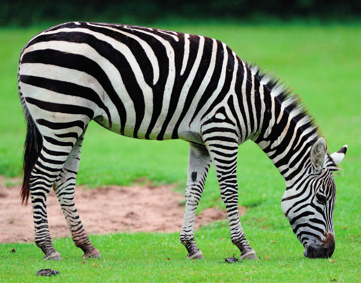

Los mamíferos representan el grupo más variado de vertebrados. Han conseguido adaptarse a todos los medios y viven en todas las latitudes, desde los polos hasta el ecuador.
Su piel está cubierta de pelo. Presenta también glándulas, como las mamarias, con las que las hembras alimentan a las crías. Tienen cuatro extremidades, excepto los cetáceos y los sirenios, que solo poseen las anteriores.

Cebra pastando
Las funciones vitales de los mamíferos
Todos ellos poseen respiración pulmonar. Hay mamíferos carnívoros, herbívoros y omnivoros. El tubo digestivo de los herbívoros es más largo que el de los carnívoros. Esto les permite obtener los nutrientes de los vegetales, que son más difíciles de digerir que la carne.
La fecundación es interna y muchos son vivíparos, ya que los embriones se desarrollan en el útero de la madre. Entre el útero materno y el embrión se suele formar la placenta, que hace posible el intercambio de nutrientes, gases y desechos metabólicos entre la madre y la cría. Paren pocas crías, que se alimentan de la leche que producen las glándulas mamarias.
Presentan el sistema nervioso más desarrollado de todos los animales. Este sistema les permite una perfecta coordinación entre los estímulos (externos e internos) y las respuestas a estos.
La voz en los mamíferos
En el aparato respiratorio de los mamíferos se localiza la laringe, que cuenta con cuerdas vocales con las que emiten voces.